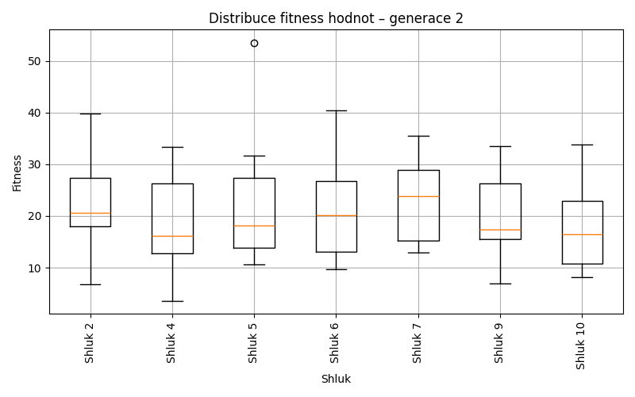
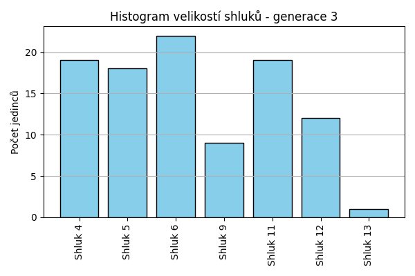
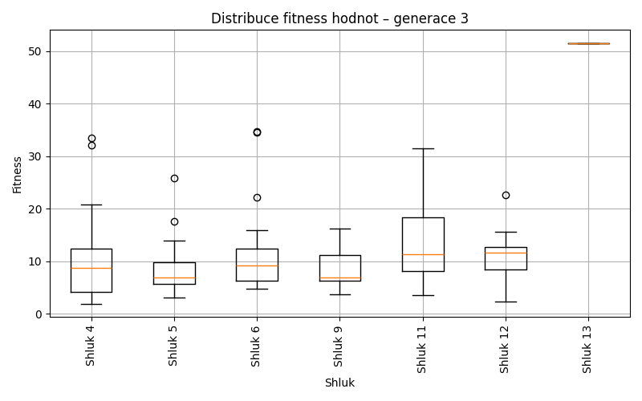
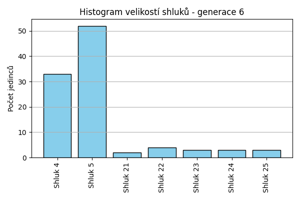
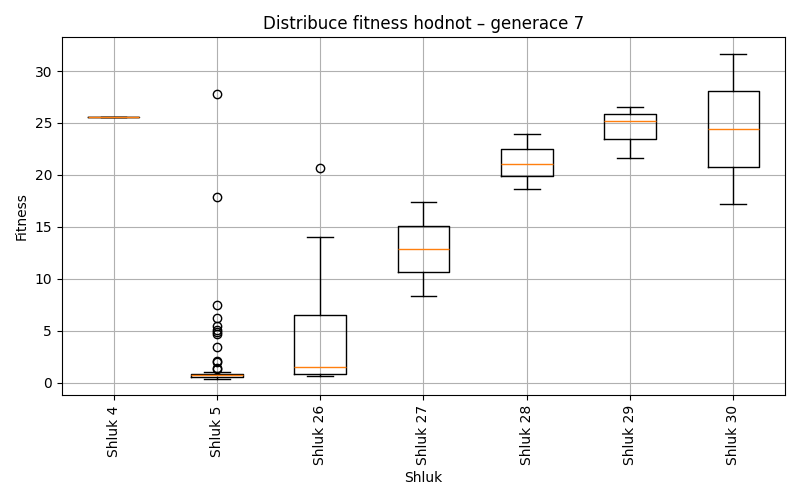
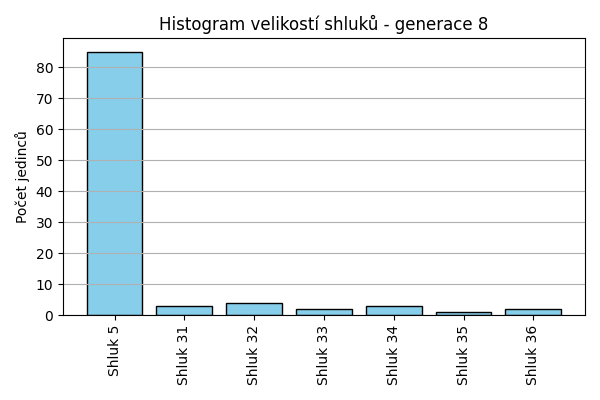
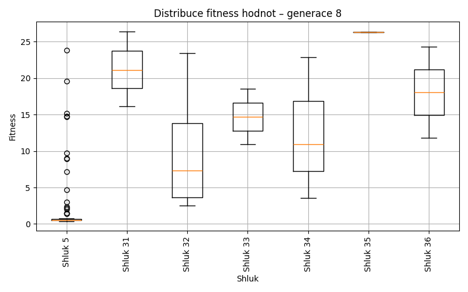
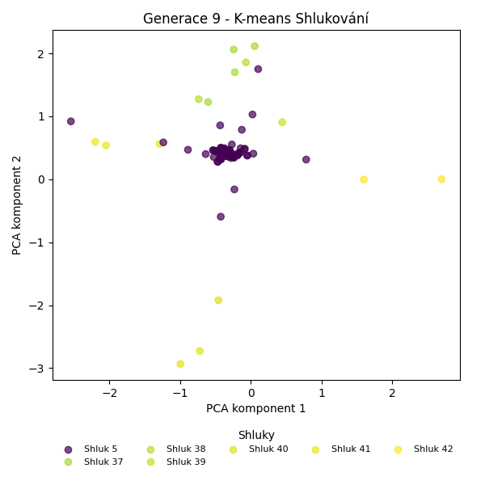
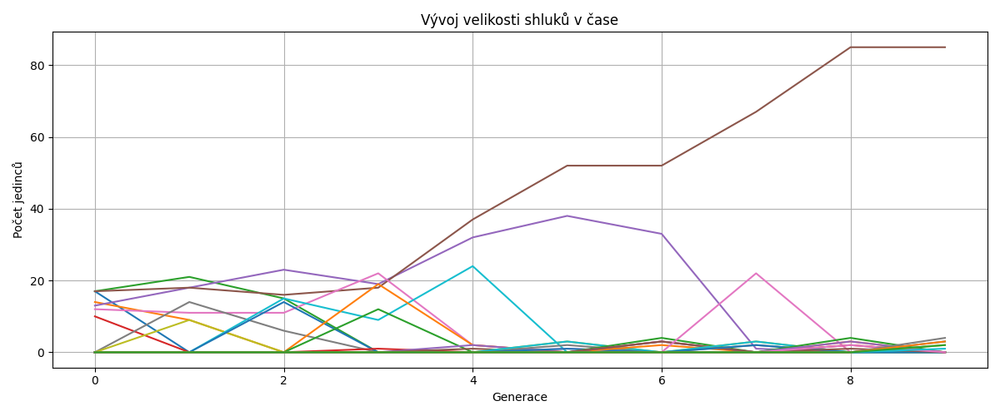

Kmeans shlukování – Vývoj
Generace 0


Generace 1

Posun centroidů mezi generací 0 → 1:
- Shluk 0: 6.0556
- Shluk 1: 2.6218
- Shluk 2: 5.0089
- Shluk 3: 6.2525
- Shluk 4: 7.6542
- Shluk 5: 4.6325
- Shluk 6: 10.1482
Generace 2

Posun centroidů mezi generací 1 → 2:
- Shluk 0: 2.2542
- Shluk 1: 3.6736
- Shluk 2: 3.0837
- Shluk 3: 6.1969
- Shluk 4: 4.5268
- Shluk 5: 5.0265
- Shluk 6: 6.7641

Generace 3


Posun centroidů mezi generací 2 → 3:
- Shluk 0: 2.0400
- Shluk 1: 4.4584
- Shluk 2: 2.9899
- Shluk 3: 3.5093
- Shluk 4: 2.1854
- Shluk 5: 6.2515
- Shluk 6: 5.9282

Generace 4

Posun centroidů mezi generací 3 → 4:
- Shluk 0: 1.8808
- Shluk 1: 1.2060
- Shluk 2: 0.9687
- Shluk 3: 2.6708
- Shluk 4: 3.1042
- Shluk 5: 5.1099
- Shluk 6: 7.6630

Generace 5


Posun centroidů mezi generací 4 → 5:
- Shluk 0: 6.1626
- Shluk 1: 1.3186
- Shluk 2: 1.3823
- Shluk 3: 1.6597
- Shluk 4: 3.6270
- Shluk 5: 6.6984
- Shluk 6: 6.0875

Generace 6


Posun centroidů mezi generací 5 → 6:
- Shluk 0: 5.2465
- Shluk 1: 1.2525
- Shluk 2: 3.9636
- Shluk 3: 3.9613
- Shluk 4: 6.8518
- Shluk 5: 8.9396
- Shluk 6: 5.9329

Generace 7


Posun centroidů mezi generací 6 → 7:
- Shluk 0: 0.9619
- Shluk 1: 4.3519
- Shluk 2: 6.4984
- Shluk 3: 5.5231
- Shluk 4: 7.3935
- Shluk 5: 7.5674
- Shluk 6: 6.8212

Generace 8


Posun centroidů mezi generací 7 → 8:
- Shluk 0: 0.2400
- Shluk 1: 5.9152
- Shluk 2: 9.4437
- Shluk 3: 6.1724
- Shluk 4: 5.3991
- Shluk 5: 8.4853
- Shluk 6: 6.0344

Generace 9

Posun centroidů mezi generací 8 → 9:
- Shluk 0: 0.2070
- Shluk 1: 5.4055
- Shluk 2: 7.5722
- Shluk 3: 5.8187
- Shluk 4: 4.6671
- Shluk 5: 6.4548
- Shluk 6: 7.7021

